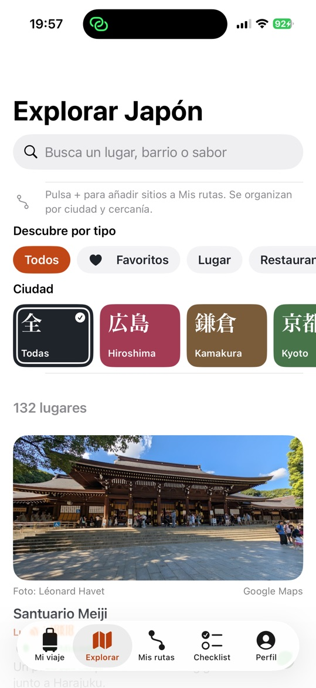
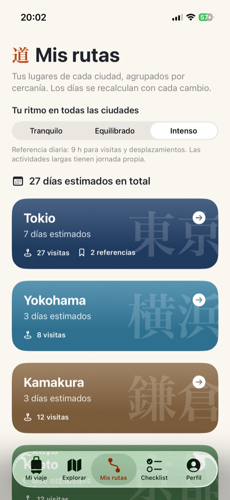
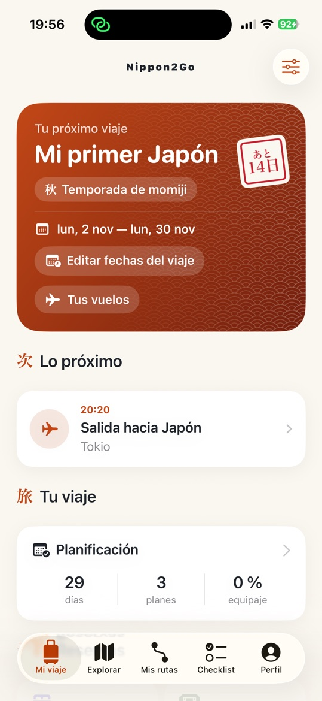
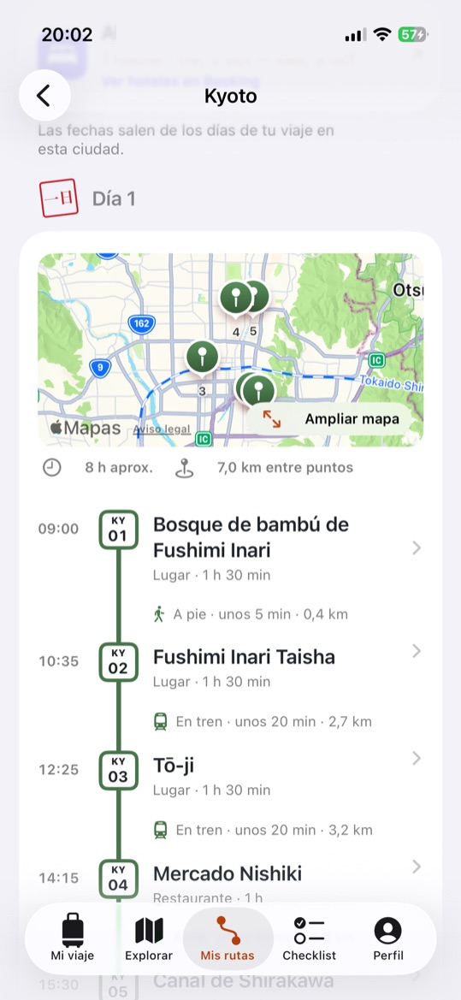
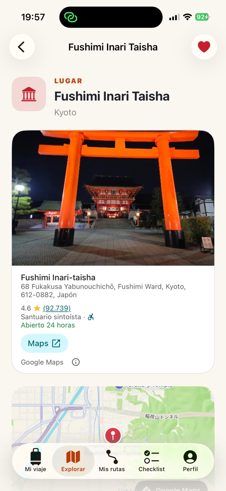
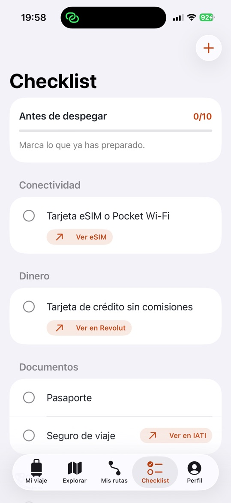
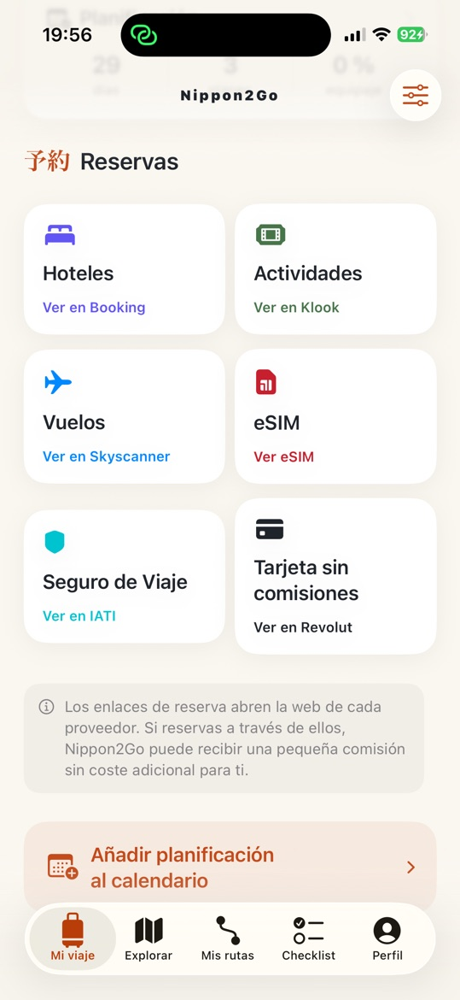

Explorar
Más de 125 lugares seleccionados
Templos, miradores, barrios, restaurantes, hoteles y experiencias en Tokio, Kioto, Osaka, Nara, Kamakura, Yokohama e Hiroshima, con fotos y filtros por tipo y por ciudad.

Descubre los mejores lugares, conviértelos en rutas realistas día a día y llega con todo listo, del pasaporte al JR Pass.
Gratis · iPhone (iOS 17+) · Android

Desde la primera idea hasta tu último día en Japón.
Explorar
Templos, miradores, barrios, restaurantes, hoteles y experiencias en Tokio, Kioto, Osaka, Nara, Kamakura, Yokohama e Hiroshima, con fotos y filtros por tipo y por ciudad.

Mis rutas
Añade lugares a tu ruta y Nippon2Go agrupa las paradas cercanas en días para cada ciudad, con horarios, distancias y si conviene ir a pie o en tren.

Lugares
Valoración de Google, horario y dirección, un mapa de Apple e indicaciones con Google Maps. Las atracciones con entrada enlazan directamente con sus entradas.

Checklist
Pasaporte, seguro de viaje, eSIM, adaptador de enchufe, JR Pass… y todo lo que añadas a la lista, que se sella con un 済 a medida que lo marcas.

Reservas
Hoteles en Skyscanner con tu ciudad y tus fechas ya puestas, actividades y entradas en Klook, una eSIM para Japón de Airalo, vuelos en Skyscanner, seguro de viaje de IATI y una tarjeta para viajar de Revolut.

Una agenda editable para cada día, que puedes añadir al Calendario de tu iPhone en hora de Japón.
No necesitas cuenta. Tus viajes se quedan en tu móvil. Disponible en 7 idiomas.
Respuestas rápidas a las dudas más habituales.
No. Puedes usar toda la app sin iniciar sesión. Si quieres, puedes iniciar sesión con Apple o con Google en Perfil → Cuenta. En ningún caso se suben tus viajes a ningún sitio.
Solo en tu móvil. Los viajes no se sincronizan entre dispositivos y, si borras la app, se borran tus viajes.
Tu viaje, tus rutas y el checklist se guardan en tu móvil. Los mapas, las fotos de los lugares, los datos de Google y los enlaces para reservar necesitan conexión.
En Explorar, abre un lugar y toca Añadir a mi ruta. En Mis rutas, Nippon2Go agrupa tus lugares por ciudad y distancia y los reparte en días según el ritmo que elijas en Tu ritmo en todas las ciudades (Tranquilo, Equilibrado o Intenso). Puedes ajustar el tiempo de cada visita y después añadir la ruta a tu agenda. Los horarios y las distancias son estimaciones, así que comprueba los horarios de apertura y el transporte antes de ir.
En Mi viaje, toca Añadir planificación al calendario, revisa los eventos y confirma. Nippon2Go solo pide permiso para añadir eventos: no puede leer tu calendario.
Nippon2Go abre los hoteles de Skyscanner con tu ciudad y tus fechas ya puestas, y enlaza con Klook para actividades y entradas, con Airalo para tu eSIM de Japón, con Skyscanner para vuelos, con IATI para el seguro de viaje y con Revolut para una tarjeta de viaje. Las reservas se hacen directamente con esos proveedores y se aplican sus condiciones y sus políticas de privacidad.
Ve a Perfil → Idioma de la app. Puedes elegir English, Español, Français, Deutsch, Italiano, 한국어 o 繁體中文, y el cambio se aplica al instante.
Para cerrar sesión, ve a Perfil → Cuenta → Cerrar sesión: se cierra la sesión y se conservan tus viajes. Para eliminar tu cuenta, ve a Perfil → Cuenta → Eliminar cuenta: la app retira su acceso a tu cuenta de Apple o de Google y borra todo lo que guardaba de la cuenta en tu móvil. Tus viajes siguen en tu móvil hasta que borres la app.
Nippon2Go acompaña al viajero desde que elige los lugares de Japón hasta que los reserva. Los enlaces a proveedores ya aparecen justo donde el viajero los necesita, listos para convertirse en enlaces de colaboración.
Cada ciudad de Mis rutas abre los hoteles de Skyscanner con las fechas de entrada y salida de esa ciudad, tomadas del viaje o estimadas a partir de la ruta. Mi viaje enlaza con hoteles de la primera ciudad del viaje, con las fechas del viaje.
Los lugares con entrada abren su propia página de entradas en Klook, las demás actividades enlazan con actividades de Klook en su ciudad, y Mi viaje también enlaza con actividades de Klook.
La sección Reservas y el checklist enlazan con vuelos (Skyscanner), una eSIM para Japón (Airalo), seguro de viaje (IATI) y una tarjeta para viajar (Revolut). El checklist también enlaza con el JR Pass (Klook).
En iPhone y Android, en inglés, español, francés, alemán, italiano, coreano y chino tradicional.
¿Te interesa colaborar con Nippon2Go? Escribe a carlos@nippon2go.com.
¿Dudas, errores o ideas de nuevos lugares? Escríbenos a carlos@nippon2go.com.